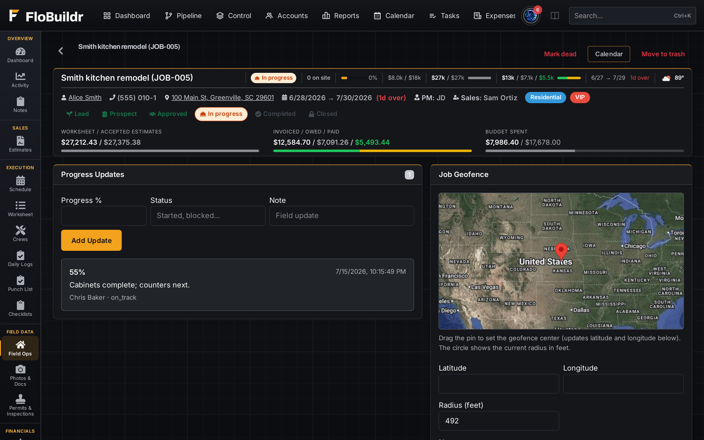
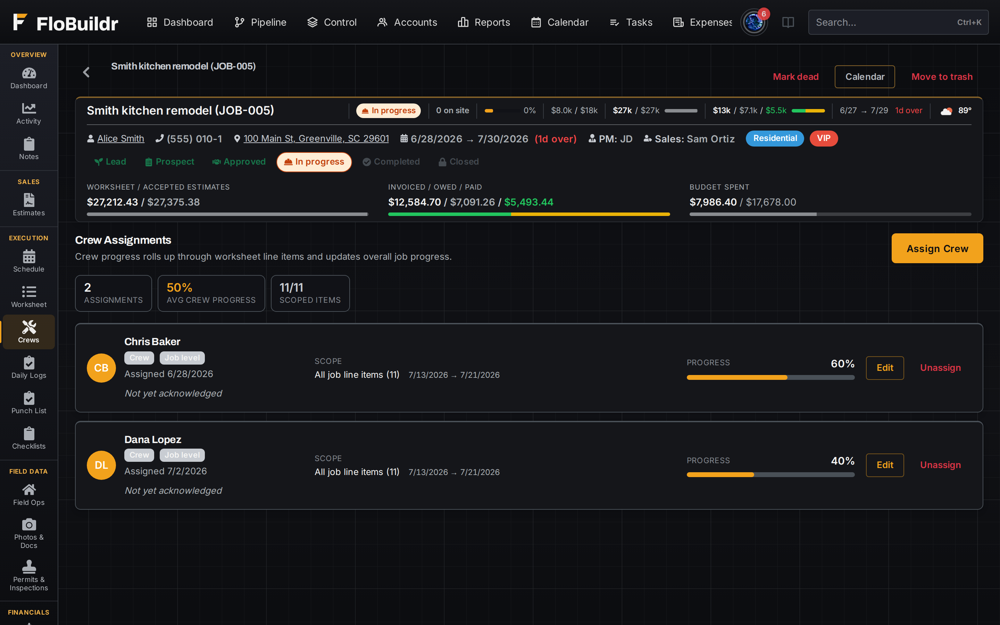
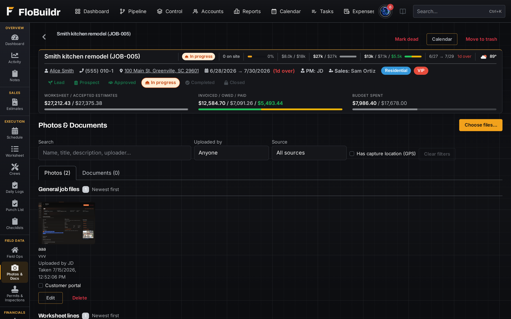
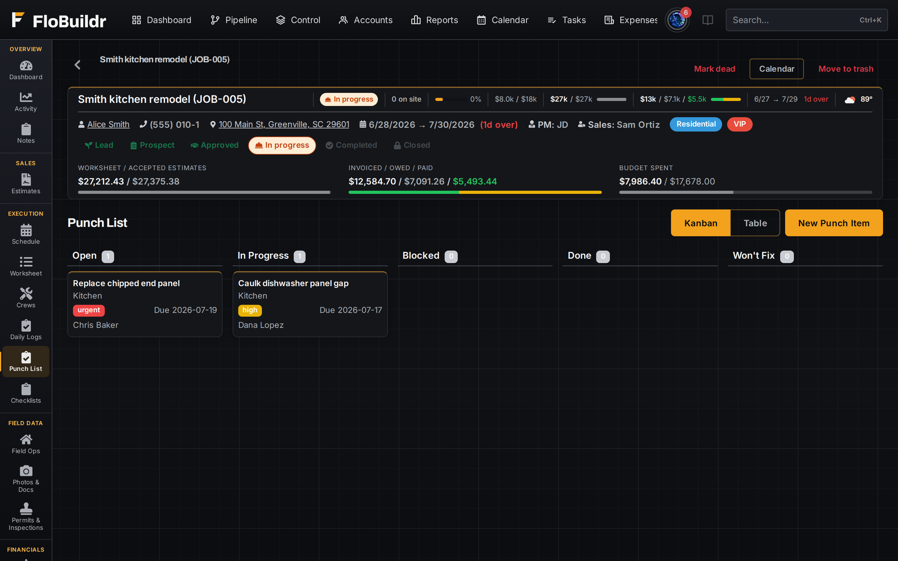

FeaturesField & crew
Assignments, clock-in, photos, punch lists, and checklists write straight to the Job Profile from the field, on the same FloBuildr account, gated by role.
Assign a job or a line to a crew member and require acknowledgment before work starts, so nobody shows up to a site they didn't know about. The assignment lives on the same Job Profile the office is tracking.

Crews clock in and out from the job, and GPS travels with the entry. The office sees a validation status against the jobsite address instead of trusting a paper timesheet after the fact.

Capture and annotate jobsite photos from a phone and they land directly on the Job Profile, visible to the office immediately and shareable to the customer portal when you're ready.

Log punch items, including by voice, and complete checklists without walking back to a truck for a laptop. Closeout items get tracked the moment someone notices them, not at a final walkthrough.

Also in this area
On the slab
Clock in with the location attached, photograph the work, close punch items, and it all lands on the job the office is watching.
Start free and put a real crew on a real job, clock in, log photos, and close the punch list.
Start free trial Book a demoFree for 60 days. No credit card. Every feature on.